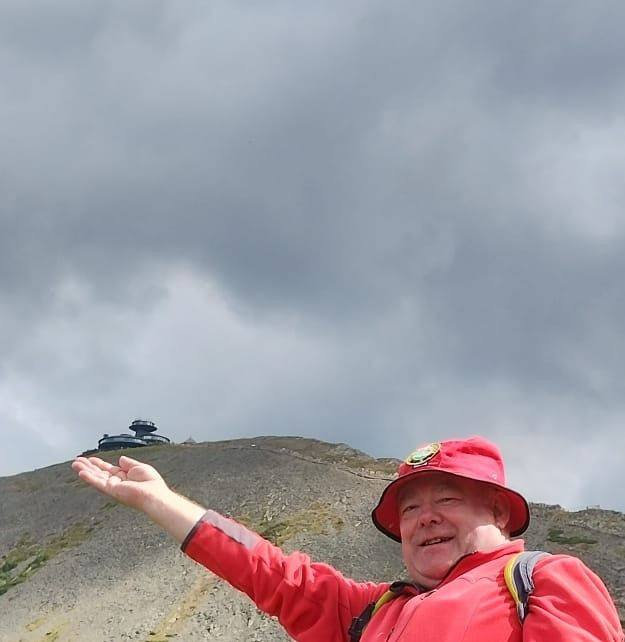

Propozycje wycieczek z przewodnikiem
Poniżej znajdziesz przykładowe propozycje wycieczek po Czechach, prowadzone przez licencjonowanego przewodnika sudeckiego.
Wycieczki po Czechach
Praga
Spacer z przewodnikiem po Starym Mieście, Hradczanach, Moście Karola i Katedrze św. Wita. Ciekawe fakty, historia i anegdoty.
Dowiedz się więcej
Wycieczka 2
Wizyta w jednym z najpiękniejszych skalnych labiryntów w Europie. Trasa wiedzie między wąwozami, wodospadami i jeziorami.
Dowiedz się więcej
Wycieczka 3
Zwiedzanie eleganckiego uzdrowiska z gorącymi źródłami, a następnie przejazd do gotyckiego zamku Loket – perły czeskiej architektury.
Dowiedz się więcej
